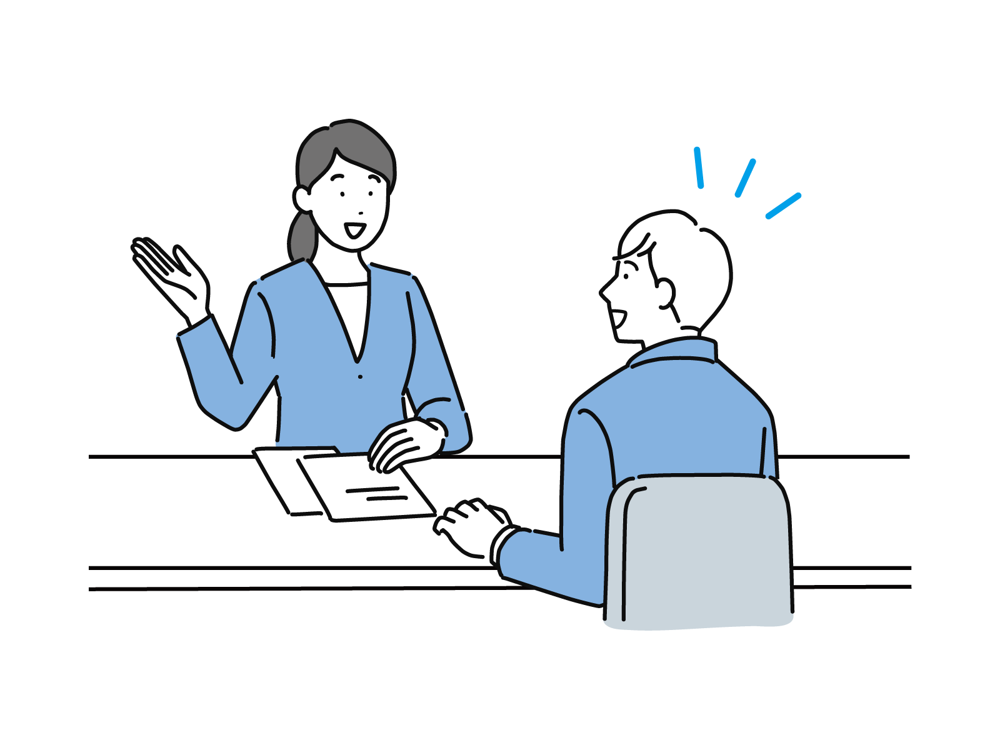
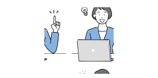

お仕事探しなら求人・研修支援センター
見学・面接・雇用条件の調整など、
就職内定まで全てをサポート

こんな悩みを抱えながら求人募集を見ていませんか？
自分の理想の条件に合う職場をずっと探していて、情報や雰囲気が知りたい。

事に就きたいけど無資格では不安。今から学校に通うには時間もお金の余裕もない。
入職時に聞いていた条件と実際の条件が異なっていた。
求人・研修支援センターの3つの特色
01
資格取得が特別価格
ご利用頂くと、資格取得の知識や各種セミナーや研修に特別価格にて参加ができます。
02
専門的な詳しい情報
相談員が細かな希望や要望、悩みなどのヒアリングを行いご希望に合ったオススメの案件をご紹介いたします。
03
どこよりも早い情報
まだどこにも出ていないオープニングスタッフの求人案件をどこよりも早く紹介することが可能です
就業サポートの流れ
01ご相談受付
ホームページまたはお電話にてご連絡ください。相談員が対応いたします。
02希望内容のヒアリング
給与や時間など基本的な情報以外にも職場の雰囲気や独自の取組など、ご希望の内容をお伺いいたします。
03案件のご紹介
1,000件以上ある求人の中から、ご希望にあったオススメの求人をピックアップしてご紹介いたします。
04見学
興味がある求人が見つかったら、相談員が求人先に連絡をして見学の日程を決めます。見学時も相談員が同行いたします。
05面接と雇用条件の調整代行
面接時も相談員が同行しますので、一人では切り出しづらい条件面のご希望も、相談員が代わりに調整いたします。
06内定・就職
入職条件に食い違いが無いように、相談員が事前に確認を行い、雇用条件を書面で提示いたします。
よくある質問
- Qハローワークとどう違うの？
- A当センターは、各種求人案件を管理しており、専門知識が豊富な相談員から、より詳しい情報を提供することができます。また、見学や面接・条件交渉なども相談員が同行して最後までサポートします。
- Q面接時に「ちょっと違う…と感じる」と感じる。どうしたらいいですか？
- A面接の時に「何かちょっと違う…」と感じたら、内定を断ることもできます。お断りの連絡も求職者に代り、相談員が行いますので遠慮なくご相談ください。
- Q紹介してもらったら必ず応募しなきゃダメですか？
- Aいいえ、そんなことはありません。募集内容を見て「ココが良い！」と思った時に応募してください。見学だけでもお気軽にどうぞ。
- Q今働いている職場に知られないか心配。大丈夫？
- A秘密厳守をお約束いたします！ご相談頂いた内容やお名前を他の方に知られることはありませんのでご安心ください！
- Q未経験・無資格でも就職サポートしてもらえますか？
- Aもちろん大丈夫です。未経験・無資格からでも始められるお仕事もたくさんあります。研修や勉強会に力を入れている施設も多数ありますので希望の求人をご紹介します。